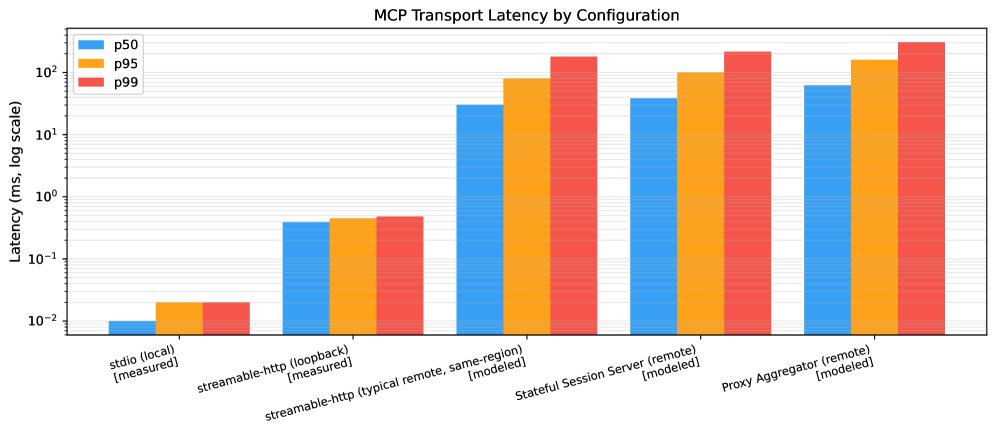
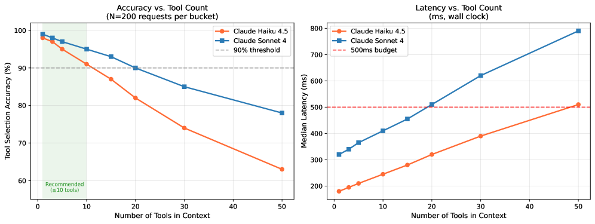

A Gang-of-Four-style pattern language for MCP servers: from 15 production + public Model Context Protocol servers, the authors distill 5 recurring architecture patterns (Resource Gateway, Tool Orchestrator, Stateful Session Server, Proxy Aggregator, Domain-Specific Adapter) + 4 anti-patterns, then back them with three measurements — inter-rater reliability κ=0.76, transport latency, and a tool-count-vs-accuracy curve. The recurring twist: an MCP server is an API whose client picks tools by reading natural-language descriptions. MCP 서버를 위한 Gang-of-Four식 패턴 언어. 프로덕션+공개 MCP(Model Context Protocol) 서버 15개에서 반복되는 아키텍처 패턴 5개(Resource Gateway, Tool Orchestrator, Stateful Session Server, Proxy Aggregator, Domain-Specific Adapter)와 안티패턴 4개를 뽑고, 세 가지 측정(rater 간 일치도 κ=0.76, 전송 레이턴시, 도구 수 vs 정확도 곡선)으로 뒷받침한다. 관통하는 반전: MCP 서버는 클라이언트가 자연어 설명을 읽어 도구를 고르는 API다.
Model Context Protocol — a JSON-RPC client↔server standard exposing three primitives to any LLM client: tools (callable functions), resources (URI-addressed data), prompts (templates), over stdio or streamable-http.Model Context Protocol — LLM 클라이언트에 세 primitive를 노출하는 JSON-RPC 클라이언트↔서버 표준: tools(호출 함수), resources(URI 데이터), prompts(템플릿), stdio 또는 streamable-http로.
Unlike a human dev, the LLM picks which tool to call by reading the tool's natural-language description — so descriptions are load-bearing and too many tools degrade selection accuracy.사람 개발자와 달리 LLM은 도구의 자연어 설명을 읽어 어떤 도구를 부를지 고른다 — 그래서 설명이 핵심이고, 도구가 너무 많으면 선택 정확도가 떨어진다.
The paper frames MCP as the "LSP for LLM tools": just as the Language Server Protocol let one server serve VS Code / Neovim / Emacs, MCP decouples the LLM host from tool providers.논문은 MCP를 "LLM 도구용 LSP"로 본다: Language Server Protocol이 한 서버로 VS Code/Neovim/Emacs를 지원했듯, MCP는 LLM 호스트와 도구 제공자를 분리한다.
Each pattern is written as Context · Problem · Solution · Consequences (benefits/liabilities) · Known Uses — the classic "Gang of Four" design-pattern template.각 패턴은 Context · Problem · Solution · Consequences(장점/부채) · Known Uses로 기술 — 고전 "Gang of Four" 디자인 패턴 템플릿.
Inter-rater reliability — agreement between two independent classifiers corrected for chance. κ=0.76 = "substantial" agreement (raters apply the taxonomy consistently).rater 간 신뢰도 — 두 독립 분류자의 일치도를 우연 보정한 값. κ=0.76 = "상당한(substantial)" 일치(분류를 일관되게 적용).
The scoped Proxy Aggregator variant: instead of merging every upstream tool into one huge list, retrieve only the per-request relevant subset — the mitigation for the tool-count accuracy cliff.scoped Proxy Aggregator 변형: 모든 상위 도구를 하나의 거대한 목록으로 합치지 않고, 요청마다 관련 부분집합만 검색 — 도구 수 정확도 절벽의 완화책.
Before MCP, integrating an LLM with a tool meant hand-rolling function-calling schemas in prompt templates and re-writing the glue for every model. MCP standardized that interface — and within months hundreds of servers appeared. But there was no architectural guidance and no maintenance/evolution view for how to actually structure one in production.
MCP 이전에는 LLM에 도구를 붙이려면 프롬프트 템플릿에 함수 호출 스키마를 손으로 짜고, 모델마다 접착 코드를 다시 써야 했다. MCP가 그 인터페이스를 표준화했고 — 몇 달 만에 서버 수백 개가 생겼다. 그런데 프로덕션에서 서버를 실제로 어떻게 구조화할지에 대한 아키텍처 지침도, 유지보수/진화 관점도 없었다.
"The Model Context Protocol (MCP) [2] standardizes this: a client–server protocol where MCP servers expose tools (callable functions), resources (URI-addressed data), and prompts (reusable templates) to any MCP-compatible client."
— §I · 원문 보기 (§I)
The load-bearing insight that makes MCP server design its own topic: the client is an LLM, and it decides what to call by reading prose, not by consulting docs or schemas.
MCP 서버 설계를 독자적 주제로 만드는 핵심 통찰: 클라이언트가 LLM이고, 무엇을 호출할지 산문(설명)을 읽어 결정한다는 것 — 문서나 스키마를 뒤지는 게 아니라.
"LLMs select tools by reading natural language descriptions, not by browsing documentation or examining schemas."
— §I · 원문 보기 (§I)
Prior MCP literature characterizes what the ecosystem contains (Guo's 8,000-server measurement), where it's vulnerable (Hou on security), and its smells (Hasan) — but none catalogs the recurring server-side design structures. The paper positions itself as the "LSP moment" for LLM tools: a shared pattern vocabulary is what turns an interface standard into an engineering discipline.
기존 MCP 문헌은 생태계가 무엇을 담는지(Guo의 8,000 서버 측정), 어디가 취약한지(Hou 보안), 어떤 냄새가 나는지(Hasan)를 다루지만 — 반복되는 서버 쪽 설계 구조를 목록화한 건 없다. 논문은 스스로를 LLM 도구의 "LSP 순간"으로 자리매김한다: 공통 패턴 어휘야말로 인터페이스 표준을 공학 규율로 만든다는 것.
"The clearest analogy is the Language Server Protocol (LSP) [7]: LSP standardized the interface between editors and language intelligence tools, enabling the same server to work in VS Code, Neovim, and Emacs without modification."
— §II-B · 원문 보기 (§II-B)
Each pattern is written in the classic Gang-of-Four form (context / problem / solution / consequences / known uses) and mapped to a classical ancestor + the "LLM-client delta" — the twist introduced because the caller is a model reading descriptions:
각 패턴은 고전 Gang-of-Four 형식(context / problem / solution / consequences / known uses)으로 쓰이고, 고전적 조상 + "LLM 클라이언트 델타"로 매핑된다 — 호출자가 설명을 읽는 모델이라서 생기는 반전:
| Pattern패턴 | Intent의도 | Ancestor + LLM delta조상 + LLM 델타 |
|---|---|---|
| Resource Gateway | Mediate all data access; reads→Resources, unsafe queries→Tools, + a sanitization layer.모든 데이터 접근 중재; 읽기→Resources, 위험 쿼리→Tools, + 살균 계층. | Repository/REST + resources named for LLM retrievalRepository/REST + LLM 검색용 명명 resource |
| Tool Orchestrator | Expose composite tools that encapsulate a whole workflow — the LLM sees one operation.워크플로 전체를 감싼 복합 도구 노출 — LLM은 하나의 연산만 봄. | Facade/Mediator + tool set sized to selection accuracyFacade/Mediator + 선택 정확도에 맞춘 도구 수 |
| Stateful Session Server | Issue a session id on connect, carry it in every call; per-session context in memory/Redis, expire on idle.연결 시 세션 id 발급, 모든 호출에 실음; 세션별 컨텍스트를 메모리/Redis에, 유휴 시 만료. | Session/Memento + state implicit, not in the promptSession/Memento + 상태는 프롬프트가 아니라 암묵적 |
| Proxy Aggregator | Proxy over N upstream servers, namespacing tool names; scoped (per-request subset) beats static-merge.N개 상위 서버 프록시, 도구명 네임스페이싱; scoped(요청별 부분집합)가 static-merge보다 나음. | Proxy/API gateway + partitions tools to fit contextProxy/API 게이트웨이 + 컨텍스트에 맞춰 도구 분할 |
| Domain-Specific Adapter | Semantic wrapper over an LLM-hostile API: readable descriptions, input normalization, output enrichment, error translation.LLM 비친화 API의 의미 래퍼: 읽기 쉬운 설명, 입력 정규화, 출력 보강, 에러 번역. | Adapter (GoF) + validation as natural-language guardrailsAdapter(GoF) + 자연어 가드레일로서의 검증 |
"Expose composite tools that encapsulate complete workflows. Each tool performs all sub-calls internally and returns a single summary. The LLM sees one operation; the server handles the orchestration."
— §IV-B (Tool Orchestrator) · 원문 보기 (§IV-B)
"Build a proxy server that connects to N upstream servers, namespacing tool names by server to prevent collisions and routing each call to the correct upstream."
— §IV-D (Proxy Aggregator) · 원문 보기 (§IV-D)
One tool with an undifferentiated do_anything schema → the LLM can't tell what it does. Fix: decompose into named tools.구분 없는 do_anything 스키마 하나 → LLM이 뭘 하는지 모름. 해법: 이름 있는 도구로 분해.
Returning user content raw → prompt injection. "Ignore previous instructions…" is read as instruction, not data. Fix: sanitize first.사용자 콘텐츠를 날것으로 반환 → 프롬프트 인젝션. "Ignore previous instructions…"가 데이터가 아니라 명령으로 읽힘. 해법: 먼저 살균.
Long syncs time out (no async callback). Fix: return a job id + poll_job(id).긴 동기 작업은 타임아웃(비동기 콜백 없음). 해법: job id 반환 + poll_job(id).
LLMs pick by description, not schema. Vague description → wrong tool. Fix: full what/when/returns text.LLM은 스키마가 아니라 설명으로 고름. 모호하면 → 잘못된 도구. 해법: 무엇/언제/반환을 온전히.
"A document containing "Ignore previous instructions and…" will be processed by the LLM as instruction, not data."
— §V-B · 원문 보기 (§V-B)
The corpus is 15 servers: 5 anonymized production servers from Celabe's ANSYR voice-AI platform (Server-A…E) + 10 public servers from the modelcontextprotocol/servers registry (filesystem/postgres/sqlite → Resource Gateway; github/slack/brave-search/fetch → Tool Orchestrator; puppeteer/memory/git → Stateful Session Server). For each, the authors extracted 5 artifacts from the source code (not README prose) — tool/resource/prompt registrations, transport config, session/state handling, delegation, domain validation — then applied two-cycle qualitative coding (open → pattern). A pattern was promoted only if it recurred:
코퍼스는 서버 15개: Celabe의 ANSYR 음성-AI 플랫폼 프로덕션 서버 5개(익명 Server-A…E) + modelcontextprotocol/servers 레지스트리 공개 서버 10개(filesystem/postgres/sqlite → Resource Gateway; github/slack/brave-search/fetch → Tool Orchestrator; puppeteer/memory/git → Stateful Session Server). 각 서버에서 README 산문이 아니라 소스 코드에서 5개 아티팩트(tool/resource/prompt 등록, 전송 설정, 세션/상태 처리, 위임, 도메인 검증)를 추출한 뒤, 2단계 질적 코딩(open → pattern)을 적용했다. 패턴은 반복될 때만 승격됐다:
"a candidate was promoted to the catalog only if it appeared independently in at least two servers and addressed a problem without an obvious prior solution."
— §III-B · 원문 보기 (§III-B)
Cross-cutting concerns (§VII) round out the guidance: bearer auth at the transport layer, structured error content, a version field + migration window, and per-call logging as the primary debug surface.
횡단 관심사(§VII)가 지침을 마무리한다: 전송 계층의 bearer 인증, 구조화된 에러 콘텐츠, 버전 필드 + 마이그레이션 창, 그리고 주 디버그 표면으로서의 호출별 로깅.
Three measurements back the catalog. (1) The taxonomy is applied consistently: on 54 held-out servers with architecture-neutral descriptions, two LLM raters (Claude Haiku 4.5 + Sonnet 4, temp 0) reach Cohen's κ=0.76 (95% CI [0.62, 0.88], 81.5% raw) — "substantial." Three systematic boundary ambiguities exist (statefulness and domain logic aren't visible from a function list).
세 측정이 카탈로그를 뒷받침한다. (1) 분류가 일관되게 적용된다: 아키텍처 중립 설명의 홀드아웃 서버 54개에서 LLM rater 둘(Claude Haiku 4.5 + Sonnet 4, temp 0)이 Cohen's κ=0.76(95% CI [0.62, 0.88], raw 81.5%) — "substantial". 체계적 경계 모호성 셋(상태성·도메인 로직은 함수 목록에서 안 보임)이 존재.
"Inter-rater agreement is substantial: κ=0.76 (95% CI [0.62,0.88]; 81.5% raw agreement), so independent raters apply the taxonomy consistently."
— §VI-A · 원문 보기 (§VI-A)
(2) Transport latency is dominated by the network, not the protocol. stdio p50 = 0.01 ms and loopback http p50 = 0.39 ms (measured); remote configs are 30–62 ms (modeled) — the gap is RTT, not MCP.
(2) 전송 레이턴시는 프로토콜이 아니라 네트워크가 지배한다. stdio p50 = 0.01 ms, loopback http p50 = 0.39 ms(측정); 원격 구성은 30~62 ms(모델링) — 차이는 RTT이지 MCP가 아니다.

MCP transport latency (p50/p95/p99, log scale) by configuration; row labels indicate measured vs modeled. Sub-ms in-host transports vs ~30–62 ms remote.구성별 MCP 전송 레이턴시(p50/p95/p99, 로그 스케일); 행 라벨은 측정 vs 모델링. 호스트 내 sub-ms vs 원격 ~30~62 ms. · Figure 1, arXiv:2606.30317
"The substantive finding: transport overhead is dominated by network RTT, not by the protocol layer."
— §VI-B · 원문 보기 (§VI-B)
(3) Tool-selection accuracy falls off a cliff. On ANSYR production logs (N=200/bucket), Haiku drops below 90% between 10–15 tools (91%@10, 87%@15); Sonnet holds ≥90% to 20 tools, drops at 30. The mitigation is a scoped Proxy Aggregator (retrieve the relevant subset), not a static merge of every upstream tool.
(3) 도구 선택 정확도는 절벽처럼 떨어진다. ANSYR 프로덕션 로그(버킷당 N=200)에서 Haiku는 도구 10~15개 사이에 90% 아래로(91%@10, 87%@15), Sonnet은 20개까지 ≥90% 유지 후 30개에서 하락. 완화책은 모든 상위 도구를 static merge 하는 게 아니라 scoped Proxy Aggregator(관련 부분집합만 검색).

Tool count vs accuracy and latency (Haiku 4.5 & Sonnet 4; N=200/bucket, ANSYR production). Shaded band = recommended ≤10 tools per context.도구 수 vs 정확도·레이턴시(Haiku 4.5·Sonnet 4; 버킷당 N=200, ANSYR 프로덕션). 음영 = 컨텍스트당 도구 ≤10 권장. · Figure 2, arXiv:2606.30317
"Haiku drops below the 90% accuracy threshold between 10 and 15 tools (91% at 10 tools, 87% at 15); Sonnet maintains ≥90% up to 20 tools and drops below at 30 tools."
— §VI-C · 원문 보기 (§VI-C)
The practitioner takeaway is a decision guide: read-mostly data → Resource Gateway + sanitization; multi-system workflows → Tool Orchestrator; per-turn dependence on prior state → Stateful Session Server (and budget for session reaping); fleet aggregation → scoped Proxy Aggregator (not static merge); an LLM-hostile API → Domain-Specific Adapter; and keep any one context under the ≈10–15-tool budget. The deeper claim: MCP server design is API design, but with a client that reasons from prose.
실무 결론은 선택 가이드다: 읽기 위주 데이터 → Resource Gateway + 살균; 다중 시스템 워크플로 → Tool Orchestrator; 턴마다 이전 상태 의존 → Stateful Session Server(세션 회수 예산 확보); 플릿 집계 → scoped Proxy Aggregator(static merge 아님); LLM 비친화 API → Domain-Specific Adapter; 그리고 컨텍스트 하나당 도구 ≈10~15개 예산 유지. 더 깊은 주장: MCP 서버 설계는 곧 API 설계이되, 클라이언트가 산문으로 추론한다는 점이 다르다.
"Precise, information-dense descriptions are necessary, not optional, and directly determine whether the tool is used correctly."
— §VIII-B · 원문 보기 (§VIII-B)
Limitations (§VIII-D/E): a 15-server, single-organization derivation corpus; single-coder open coding with secondary verification (not dual coding); classification inputs are synthetic descriptions; and 3 of 5 latency rows are modeled, not measured. Both LLM raters share blind spots.
한계(§VIII-D/E): 15개 서버·단일 조직 도출 코퍼스; 이중 코딩이 아닌 단일 코더 open coding + 2차 검증; 분류 입력이 합성 설명; 레이턴시 5행 중 3행은 측정이 아닌 모델링. LLM rater 둘은 사각을 공유.
The replication package is public: github.com/rodriguescarson/mcp-patterns-icsme2026 (MIT) — corpus.json, transport_bench.py, tool_count_telemetry.csv, prompts/, analyze.py. Two honest caveats: the raters aren't bit-deterministic even at temp 0 (±2 pp), and the production logs behind Figure 2 are not redistributable, so that curve can't be fully re-derived from the released code alone. The patterns themselves ship as illustrative TypeScript listings in the paper, not a framework.
재현 패키지가 공개돼 있다: github.com/rodriguescarson/mcp-patterns-icsme2026 (MIT) — corpus.json, transport_bench.py, tool_count_telemetry.csv, prompts/, analyze.py. 정직한 단서 둘: rater가 temp 0에서도 비트 결정적이지 않고(±2pp), Figure 2 뒤의 프로덕션 로그는 재배포 불가라 그 곡선은 공개 코드만으로 완전 재현되지 않는다. 패턴 자체는 프레임워크가 아니라 논문 속 예시 TypeScript 리스팅으로 제공된다.